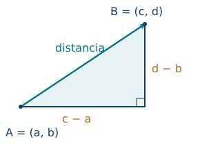
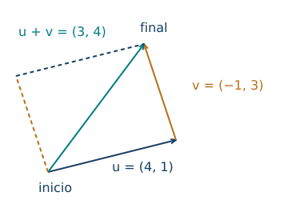
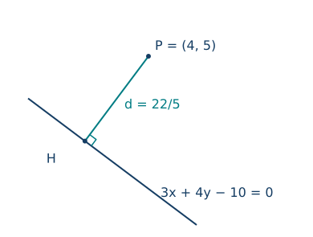
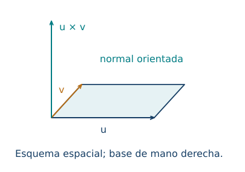

Coordenadas, rectas, distancias y vectores
← Razones trigonométricas, radianes e identidades · Índice del libro · Siguiente →
Un equipo de rescate recibe dos referencias: el refugio está dos kilómetros al oeste y uno al norte del campamento; una persona pide ayuda desde un punto situado cuatro kilómetros al este y nueve al norte. El mapa permite señalar ambos lugares. Para organizar el traslado hace falta obtener algo más: la dirección y la longitud del desplazamiento entre ellos. Las coordenadas convierten esas referencias en números con los que podemos razonar, calcular y comprobar una ruta.
La elección del campamento como origen forma parte de la descripción. Otro equipo podría usar un origen distinto y localizar exactamente los mismos lugares. Esa libertad será útil: escogeremos las coordenadas que hagan visible la estructura de cada problema. Trabajaremos primero en un plano euclidiano con dos ejes perpendiculares, orientados y provistos de la misma unidad de longitud. Esta última condición permite aplicar directamente Pitágoras a las diferencias de coordenadas.
Localizar y medir
El punto \(P=(x,y)\) queda determinado por sus proyecciones sobre los ejes: \(x\) mide la posición horizontal con signo y \(y\) la vertical. El orden del par indica qué eje corresponde a cada número. Al pasar de \(A=(a,b)\) a \(B=(c,d)\), las variaciones horizontal y vertical son \(c-a\) y \(d-b\). El segmento que une los puntos es la hipotenusa de un triángulo cuyos catetos miden \(|c-a|\) y \(|d-b|\). Pitágoras da
\[d(A,B)=\sqrt{(c-a)^2+(d-b)^2}.\]

El cuadrado absorbe el signo de cada diferencia; la raíz elegida es la no negativa, como corresponde a una longitud. Si el mapa usa escalas gráficas distintas en ambos ejes, primero se convierten las componentes a una unidad física común. La inclinación aparente de una línea en una pantalla deformada puede cambiar, mientras las coordenadas y la fórmula conservan su significado en el sistema declarado. Por ejemplo, si ambos ejes representan kilómetros, una diferencia horizontal de tres y una vertical de cuatro siguen dando cinco kilómetros, aunque el dibujo aparezca estirado.
Problema 1. Del campamento al rescate
En el mapa descrito al comienzo, calcula la distancia recta entre el refugio \(A=(-2,1)\) y la persona \(B=(4,9)\). Cada unidad representa un kilómetro.
Solución. De oeste a este se avanza \(4-(-2)=6\) km y hacia el norte, \(9-1=8\) km. La distancia recta es \(\sqrt{6^2+8^2}=\sqrt{100}=10\) km. Una ruta que recorra primero la dirección este y luego la norte mide \(6+8=14\) km. Ambas cifras responden a recorridos concretos: diez kilómetros corresponden al segmento que une los lugares; catorce, al trayecto quebrado descrito. El terreno determinará cuál puede recorrerse.
Problema 2. Un punto igualmente alejado de dos estaciones
Encuentra todos los puntos del eje horizontal que están a igual distancia de \(A=(-2,3)\) y \(B=(4,1)\).
Solución. Escribimos el punto buscado como \(P=(x,0)\): pertenecer al eje horizontal fija la segunda coordenada. Igualar distancias equivale aquí a igualar sus cuadrados, pues ambas son no negativas:
\[ (x+2)^2+9=(x-4)^2+1.\]
Al desarrollar, \(x^2+4x+13=x^2-8x+17\), de donde \(12x=4\) y \(x=1/3\). Hay un solo punto, \((1/3,0)\). Para comprobarlo, ambos cuadrados de distancia valen \(130/9\). La ecuación lineal obtenida muestra además la unicidad.
Un segmento contiene una sucesión continua de puntos entre sus extremos. Para describirlos podemos repartir el desplazamiento total: una fracción \(t\) de la variación horizontal y la misma fracción de la vertical. Así obtenemos
\[P=A+t(B-A)=((1-t)a+tc,(1-t)b+td).\]
Para \(0\le t\le1\), el punto recorre el segmento de \(A\) a \(B\); con \(t\) real recorre toda la recta cuando \(A\ne B\). El punto medio corresponde a \(t=1/2\). Si \(AP:PB=m:n\), con \(m,n>0\), la fracción recorrida es \(t=m/(m+n)\): el denominador cuenta las partes totales.
Problema 3. Repartir un tramo
Para \(A=(-1,2)\) y \(B=(5,-4)\), calcula el punto medio \(M\) y el punto interior \(P\) que cumple \(AP:PB=1:2\).
Solución. El desplazamiento total es \((6,-6)\). Su mitad lleva a \(M=(-1,2)+(3,-3)=(2,-1)\). El reparto \(1:2\) asigna a \(AP\) una de las tres partes: \(P=(-1,2)+(2,-2)=(1,0)\). Las longitudes son \(AP=2\sqrt2\) y \(PB=4\sqrt2\), por lo que la razón pedida se cumple. Dar a \(AP\) dos tercios colocaría el punto en el reparto inverso.
La circunferencia de centro \(C=(h,k)\) y radio \(r>0\) reúne los puntos cuya distancia a \(C\) es \(r\). La fórmula de distancia transforma esa condición en \((x-h)^2+(y-k)^2=r^2\). Los signos del centro se leen dentro de las diferencias: \(y+1\) expresa la distancia con signo respecto de la coordenada \(-1\).
Problema 4. Reconocer una circunferencia
Determina el centro y el radio de \(x^2+y^2-4x+2y-20=0\). Decide si \((5,3)\) pertenece a ella.
Solución. Agrupamos y completamos cuadrados:
\[ (x-2)^2-4+(y+1)^2-1=20.\]
Por tanto, \((x-2)^2+(y+1)^2=25\). El centro es \((2,-1)\) y el radio es \(5\). Para \((5,3)\), el lado izquierdo vale \(3^2+4^2=25\), así que el punto pertenece a la circunferencia. La misma comprobación dice que su distancia al centro es cinco.
Propiedades de coordenadas y distancias
| Propiedad | Fórmula y condiciones de uso |
|---|---|
| Distancia cartesiana | \(d(A,B)=\sqrt{(c-a)^2+(d-b)^2}\) en ejes perpendiculares con unidad común. |
| División del segmento | \(P=A+t(B-A)\); \(0\le t\le1\) describe el segmento. |
| Punto medio | \(M=((a+c)/2,(b+d)/2)\). |
| Razón interior | \(AP:PB=m:n\) implica \(t=m/(m+n)\), para \(A\ne B\) y \(m,n>0\). |
| Circunferencia | \((x-h)^2+(y-k)^2=r^2\), con centro \((h,k)\) y radio \(r>0\). |
Pruebas. En el apéndice, «Distancias y reparto en coordenadas».
Describir un desplazamiento
Para volver del rescate al refugio hay que invertir las dos variaciones. El desplazamiento posee componentes con signo y una longitud. Un vector libre representa la clase de todos los desplazamientos que tienen las mismas componentes en los ejes elegidos. Podemos dibujarlo mediante una flecha desde cualquier punto: la cola indica dónde comenzamos y la punta dónde terminamos. Para \(A=(a,b)\) y \(B=(c,d)\) escribimos \(\overrightarrow{AB}=(c-a,d-b)\).
La componente horizontal y la vertical son números reales con signo. El módulo \(\|u\|=\sqrt{u_x^2+u_y^2}\) es una longitud. El vector cero \((0,0)\) tiene módulo cero; su representación es un desplazamiento que termina donde comienza, y su dirección angular queda indeterminada. Para \(u\ne0\), el vector \(u/\|u\|\) tiene módulo uno y el mismo sentido.
Problema 5. Cambiar el lugar de una flecha
Un desplazamiento va de \(A=(2,-1)\) a \(B=(-1,3)\). Obtén sus componentes, su módulo y la punta de una flecha equivalente que comience en \(C=(5,2)\).
Solución. Restamos final menos inicial: \(u=(-1-2,3-(-1))=(-3,4)\). Su módulo es \(\sqrt{9+16}=5\). La nueva punta es \(D=C+u=(2,6)\). En efecto, \(\overrightarrow{CD}=(2-5,6-2)=(-3,4)\). El número \(-3\) expresa tres unidades hacia el lado negativo horizontal; el módulo cinco expresa la longitud total del desplazamiento.
Si a un desplazamiento \(u\) le sigue otro \(v\), las variaciones por eje se acumulan. Esto define \(u+v=(u_x+v_x,u_y+v_y)\) y justifica la regla de colocar la cola de la segunda flecha en la punta de la primera. La resultante une el inicio del primer tramo con el final del segundo. La figura del paralelogramo expresa la misma suma al dibujar ambos vectores desde un origen común.

Multiplicar \(u\) por un real \(k\) produce \(ku=(ku_x,ku_y)\). Si \(k>0\) conserva el sentido; si \(k<0\) lo invierte; su longitud es \(|k|\|u\|\). Para \(k=0\) obtenemos el vector cero. Las reglas de suma y producto por escalar heredan las propiedades de los números reales componente a componente: por ejemplo, \(k(u+v)=(ku_x+kv_x,ku_y+kv_y)=ku+kv\).
Problema 6. Dos tramos y una resultante
Una persona recorre los desplazamientos \(u=(4,1)\) y \(v=(-1,3)\), en kilómetros. Calcula el desplazamiento total y la longitud del trayecto quebrado.
Solución. La resultante es \(u+v=(3,4)\), de módulo cinco kilómetros. Los tramos miden \(\sqrt{17}\) y \(\sqrt{10}\) km, de modo que la longitud recorrida es \(\sqrt{17}+\sqrt{10}\approx7{,}29\) km. La suma de longitudes conserva el recorrido; la suma vectorial conserva el efecto de ambos tramos sobre la posición final.
Problema 7. Un movimiento que deshace otro
Una plataforma ha sufrido el desplazamiento \(u=(-6,8)\) cm. ¿Qué desplazamiento debe aplicarse para volver a su posición inicial? ¿Y para deshacer solamente la cuarta parte del desplazamiento original?
Solución. El retorno completo requiere \(-u=(6,-8)\) cm, porque \(u+(-u)=(0,0)\). Su longitud es diez centímetros. Para deshacer una cuarta parte aplicamos \(-u/4=(3/2,-2)\) cm, cuyo módulo es \(10/4=5/2\) cm. Queda entonces un desplazamiento neto de \(3u/4=(-9/2,6)\) cm respecto del inicio.
Problema 8. Una homotecia vista desde su centro
Una homotecia tiene centro \(O=(1,-2)\) y razón \(k=-2\). Obtén la imagen de \(A=(3,1)\).
Solución. Primero medimos desde el centro: \(\overrightarrow{OA}=(2,3)\). La imagen debe satisfacer \(\overrightarrow{OA'}=-2(2,3)=(-4,-6)\). Sumando de nuevo el centro, \(A'=O+(-4,-6)=(-3,-8)\). El signo sitúa la imagen en el rayo opuesto y el factor dos duplica la distancia al centro. La fórmula \(A'=O+k(A-O)\) mantiene visibles ambas decisiones.
Propiedades de las operaciones vectoriales
| Propiedad | Fórmula y condiciones de uso |
|---|---|
| Desplazamiento y módulo | \(\overrightarrow{AB}=B-A\); \(\lVert u\rVert =\sqrt{u_x^2+u_y^2}\). |
| Suma por componentes | \(u+v=(u_x+v_x,u_y+v_y)\). |
| Conmutatividad y asociatividad | \(u+v=v+u\); \((u+v)+w=u+(v+w)\). |
| Cero y opuesto | \(u+0=u\); \(u+(-u)=0\). |
| Escala y longitud | \(ku=(ku_x,ku_y)\); $ku=ku$. |
| Distributividades | \(k(u+v)=ku+kv\); \((k+l)u=ku+lu\). |
| Compatibilidad escalar | \(k(lu)=(kl)u\); \(1u=u\). |
| Vector unitario | $u=u/u$, para \(u\ne0\). |
| Homotecia | \(A'=O+k(A-O)\); \(k\ne0\) para una homotecia invertible. |
Pruebas. En el apéndice, «Operaciones con vectores y homotecias en coordenadas».
Ángulos, componentes y proyecciones
Un vector de módulo \(r>0\) que forma un ángulo orientado \(\theta\) desde el eje horizontal positivo tiene componentes \((r\cos\theta,r\sin\theta)\). Basta ampliar por \(r\) el radio unitario estudiado en el capítulo anterior. Los signos de seno y coseno incorporan el cuadrante. Si el ángulo se mide desde otro eje, hay que reconstruir el triángulo correspondiente o traducirlo al ángulo orientado declarado.
Problema 9. Una dirección del segundo cuadrante
Calcula las componentes de un vector de módulo diez que forma \(150^\circ\) con el eje horizontal positivo.
Solución. El ángulo tiene coseno \(-\sqrt3/2\) y seno \(1/2\). Por tanto, \(u=(-5\sqrt3,5)\). Su componente horizontal es negativa y la vertical positiva, como exige el segundo cuadrante. La comprobación \(\|u\|^2=75+25=100\) recupera el módulo diez.
Problema 10. Una embarcación y una corriente
En un modelo de velocidades constantes, una embarcación avanza respecto del agua a \(4\) m/s hacia el norte y la corriente fluye a \(3\) m/s hacia el este. Obtén la velocidad respecto de la orilla.
Solución. Elegimos este como eje horizontal positivo y norte como vertical positivo. Las contribuciones son \((0,4)\) y \((3,0)\) m/s, cuya suma es \((3,4)\) m/s. Su módulo es cinco metros por segundo. El ángulo al este del norte cumple \(\tan\alpha=3/4\), así que \(\alpha\approx36{,}87^\circ\). El resultado supone que ambas velocidades se componen mediante la suma de desplazamientos durante el mismo intervalo de tiempo; con un segundo, las componentes del desplazamiento son tres y cuatro metros.
El producto escalar permitirá hacer proyecciones sobre una dirección cualquiera. Lo definimos por \(u\cdot v=u_xv_x+u_yv_y\). Para vectores no nulos, si \(\phi\in[0,\pi]\) es el ángulo entre ellos, la ley de cosenos aplicada al triángulo de lados \(u,v,u-v\) da
\[u\cdot v=\|u\|\,\|v\|\cos\phi.\]
La justificación algebraica consiste en desarrollar \(\|u-v\|^2=\|u\|^2+\|v\|^2-2(u\cdot v)\) y comparar con la ley de cosenos. Así se unen la definición por coordenadas y la interpretación geométrica. Dos vectores no nulos son perpendiculares precisamente cuando su producto escalar vale cero. Adoptamos también la convención algebraica de que el vector cero es ortogonal a todos los vectores; el ángulo geométrico se reserva a los pares no nulos.
Si \(e\) es unitario, el número \(u\cdot e\) es la componente de \(u\) en la dirección orientada de \(e\); puede ser negativo. El vector proyectado es \((u\cdot e)e\). Para una dirección dada por \(v\ne0\), sustituimos \(e=v/\|v\|\) y obtenemos
\[\operatorname{proj}_v u=\frac{u\cdot v}{v\cdot v}\,v.\]
Restar esta proyección deja una componente perpendicular a \(v\). La igualdad \((u-\operatorname{proj}_v u)\cdot v=0\) lo comprueba directamente y permite verificar cualquier cálculo de proyección.
Problema 11. Empujar junto a una rampa
Una fuerza horizontal hacia la derecha tiene módulo \(20\) N. Una rampa asciende hacia la derecha formando \(30^\circ\) con la horizontal. Descompón la fuerza en las direcciones paralela y normal a la rampa, con normal positiva hacia arriba de su superficie.
Solución. En los ejes horizontales habituales, \(F=(20,0)\). Elegimos los unitarios \(e=(\sqrt3/2,1/2)\) a lo largo de la subida y \(n=(-1/2,\sqrt3/2)\) hacia arriba de la superficie. Son perpendiculares, pues \(e\cdot n=0\), y ambos tienen módulo uno. Las componentes con signo son \(F\cdot e=10\sqrt3\) N y \(F\cdot n=-10\) N. Los vectores correspondientes son \((15,5\sqrt3)\) y \((5,-5\sqrt3)\) N; su suma recupera \((20,0)\). El signo negativo de la segunda componente expresa que la fuerza empuja hacia la superficie.
Problema 12. Proyectar sobre una dirección oblicua
Proyecta \(u=(3,4)\) sobre la dirección \(v=(1,2)\) y determina la componente perpendicular.
Solución. Calculamos \(u\cdot v=3+8=11\) y \(v\cdot v=1+4=5\). La proyección vectorial es \((11/5)v=(11/5,22/5)\). Al restar queda \(w=(4/5,-2/5)\). Se verifica \(w\cdot v=4/5-4/5=0\). La componente escalar sobre el unitario que apunta como \(v\) vale \(11/\sqrt5\), una longitud con signo; la proyección vectorial tiene además dirección y componentes. Sus cuadrados de módulo satisfacen \(121/5+4/5=25=\|u\|^2\).
Propiedades del producto escalar y de la proyección
| Propiedad | Fórmula y condiciones de uso |
|---|---|
| Componentes desde un ángulo | \(u=(r\cos\theta,r\sin\theta)\); \(r>0\), ángulo desde el eje horizontal positivo. |
| Producto escalar | \(u\cdot v=u_xv_x+u_yv_y\); \(u\cdot u=\lVert u\rVert ^2\). |
| Simetría y linealidad | \(u\cdot v=v\cdot u\); \(u\cdot(v+w)=u\cdot v+u\cdot w\); \((ku)\cdot v=k(u\cdot v)\). |
| Ángulo y ortogonalidad | \(\cos\phi=(u\cdot v)/(\lVert u\rVert \lVert v\rVert )\) para \(u,v\ne0\); ortogonalidad algebraica: \(u\cdot v=0\). |
| Proyección escalar | \(u\cdot e\), con \(\lVert e\rVert =1\), en la dirección orientada de \(e\). |
| Proyección vectorial | \(\operatorname{proj}_v u=((u\cdot v)/(v\cdot v))v\), para \(v\ne0\). |
| Descomposición perpendicular | \(u=\operatorname{proj}_v u+w\), con \(w\cdot v=0\). |
Pruebas. En el apéndice, «Producto escalar, ángulos y proyecciones ortogonales».
Una recta a partir de un punto y una dirección
Imaginemos una guía recta que atraviesa un punto \(A\) y sigue una dirección \(d\ne0\). Todos sus puntos se obtienen mediante \(P=A+td\), con \(t\) real. El parámetro recorre desplazamientos en ambos sentidos. Si \(d=(p,q)\), esto significa \(x=a+tp\), \(y=b+tq\). La dirección se conserva al sustituir \(d\) por cualquier múltiplo no nulo: cambia la manera de recorrer la recta.
Cuando \(p\ne0\), despejamos \(t=(x-a)/p\) y obtenemos \(y-b=(q/p)(x-a)\). La pendiente \(m=q/p\) mide la variación vertical por unidad horizontal. Si \(p=0\), todos los puntos tienen \(x=a\) y la recta es vertical; su dirección se describe perfectamente con \((0,q)\). Para \(q=0\) y \(p\ne0\), la pendiente vale cero y la recta es horizontal.
Problema 13. Reconstruir una guía recta
Encuentra una ecuación de la recta que pasa por \(A=(-2,1)\) y \(B=(4,4)\). Da también una parametrización.
Solución. La dirección \(B-A=(6,3)\) se puede simplificar a \((2,1)\). La pendiente es \(1/2\), y la forma punto-pendiente da \(y-1=(x+2)/2\), equivalente a \(y=x/2+2\). Una parametrización es \((x,y)=(-2,1)+t(2,1)\), con \(t\in\mathbb R\). Para \(t=0\) aparece \(A\); para \(t=3\) aparece \(B\). Sustituir ambos puntos en la ecuación proporciona una segunda comprobación.
Problema 14. Dos direcciones de referencia
Escribe ecuaciones y parametrizaciones de la recta vertical por \((3,1)\) y de la horizontal por \((1,-2)\). Encuentra su intersección.
Solución. En la vertical, la primera coordenada permanece fija: \(x=3\), o \((x,y)=(3,1)+t(0,1)\). En la horizontal, permanece fija la segunda: \(y=-2\), o \((x,y)=(1,-2)+s(1,0)\). El punto común debe satisfacer ambas condiciones, de modo que es \((3,-2)\). La dirección de la primera forma \(90^\circ\) con la de la segunda.
Otra descripción de una recta es \(ax+by+c=0\), con \((a,b)\ne(0,0)\). Su vector normal es \(n=(a,b)\) y una dirección es \(d=(-b,a)\), pues \(n\cdot d=0\). Si \(P_0\) pertenece a la recta, la ecuación equivale a \(n\cdot(P-P_0)=0\): el desplazamiento desde \(P_0\) es perpendicular a la normal. Multiplicar los tres coeficientes por un mismo real no nulo conserva la recta.
Problema 15. Cruzar dos condiciones
Encuentra el punto común de \(x+2y=5\) y \(2x-y=0\).
Solución. La segunda condición da \(y=2x\). Sustituida en la primera, produce \(x+4x=5\), luego \(x=1\) y \(y=2\). La comprobación entrega \(1+4=5\) y \(2-2=0\). Las direcciones \((2,-1)\) y \((1,2)\) tienen producto escalar cero; estas rectas se cruzan perpendicularmente. Resolver sus ecuaciones ha localizado el mismo cruce que representa la geometría.
Para medir la distancia de un punto \(P=(x_0,y_0)\) a una recta, buscamos el pie perpendicular \(H\). La normal \((a,b)\) indica la dirección en la que debemos movernos desde \(P\), así que podemos escribir \(H=P-t(a,b)\) y buscar el valor de \(t\) que sitúe el punto en la recta. Al sustituir sus coordenadas en \(ax+by+c=0\) aparece \(ax_0+by_0+c-t(a^2+b^2)=0\). Si llamamos \(f=ax_0+by_0+c\), obtenemos \(t=f/(a^2+b^2)\), con denominador positivo porque la normal es no nula. El desplazamiento necesario queda entonces expresado por
\[H=P-\frac{f}{a^2+b^2}(a,b).\]
Al sustituir las coordenadas de \(H\) en la ecuación queda \(f-f=0\). Además, \(P-H\) es paralelo a la normal y, por ello, perpendicular a la recta. Su módulo es \(|f|/\sqrt{a^2+b^2}\). Este segmento es el más corto: para cualquier otro punto \(Q\) de la recta, Pitágoras da \(PQ^2=PH^2+HQ^2\ge PH^2\).

Problema 16. La distancia a un borde recto
Obtén la distancia de \(P=(4,5)\) a la recta \(3x+4y-10=0\) y las coordenadas del punto más cercano.
Solución. Evaluar la expresión de la recta en \(P\) da \(f=12+20-10=22\). El normal \((3,4)\) tiene módulo cinco, por lo que la distancia es \(22/5\). El pie es
\[H=(4,5)-\frac{22}{25}(3,4)=(34/25,37/25).\]
Se comprueba que \(3(34/25)+4(37/25)=250/25=10\). El desplazamiento \(P-H=(66/25,88/25)\) es un múltiplo de \((3,4)\) y tiene módulo \(22/5\), como debía suceder.
Dos rectas tienen direcciones paralelas cuando sus vectores directores son proporcionales. Para \(u=(u_x,u_y)\) y \(v=(v_x,v_y)\) no nulos, esto equivale a \(u_xv_y-u_yv_x=0\). Direcciones perpendiculares satisfacen \(u\cdot v=0\). Estas pruebas incluyen las rectas verticales. Para rectas paralelas distinguiremos además su posición: pueden compartir todos sus puntos o tener conjuntos de puntos disjuntos.
Problema 17. Paralelas o coincidentes
Compara \(r:2x-y+1=0\) con \(s:4x-2y-6=0\) y con \(q:4x-2y+2=0\). Calcula la distancia entre \(r\) y \(s\).
Solución. Sus normales son proporcionales. Dividir \(s\) por dos da \(2x-y-3=0\), mientras dividir \(q\) por dos reproduce \(r\). Así, \(q\) y \(r\) coinciden, y \(s\) es paralela y distinta. El punto \((0,1)\) pertenece a \(r\); su distancia a \(s\) es \(|2(0)-1-3|/\sqrt5=4/\sqrt5\). Para cualquier punto \((x,y)\) de \(r\) se cumple \(2x-y=-1\), por lo que el numerador mantiene ese valor absoluto cuatro: la separación es constante.
Problema 18. Construir una perpendicular
Encuentra la recta por \(P=(2,-1)\) perpendicular a \(r:2x+3y-6=0\) y su cruce con \(r\).
Solución. El normal de \(r\), \((2,3)\), sirve como dirección de la perpendicular. Un normal para la nueva recta es \((3,-2)\), y su ecuación resulta \(3(x-2)-2(y+1)=0\), es decir, \(3x-2y-8=0\). Para cruzarlas, multiplicamos la primera por dos y la segunda por tres: \(4x+6y=12\) y \(9x-6y=24\). Al sumar, \(13x=36\), luego \(x=36/13\) y \(y=2/13\). Desde \(P\) hasta el cruce, la variación es \((10/13,15/13)=(5/13)(2,3)\), que confirma la perpendicularidad buscada.
Problema 19. Un ángulo entre rectas
Obtén el ángulo agudo entre las direcciones \(u=(1,2)\) y \(v=(2,1)\).
Solución. El producto escalar vale cuatro y ambos módulos valen \(\sqrt5\). El ángulo entre estos vectores tiene coseno \(4/5\), así que \(\phi=\arccos(4/5)\approx36{,}87^\circ\). Para el ángulo agudo entre rectas usamos el valor absoluto del producto escalar: elegir \(-v\) describiría la misma recta y daría el ángulo suplementario entre flechas. El valor absoluto selecciona siempre el ángulo menor o igual que \(90^\circ\).
Propiedades de las rectas y de la perpendicularidad
| Propiedad | Fórmula y condiciones de uso |
|---|---|
| Recta paramétrica | \(P=A+td\), \(t\in\mathbb R\), \(d\ne0\). |
| Pendiente | \(m=q/p\) para \(d=(p,q)\) y \(p\ne0\); \(y-b=m(x-a)\). |
| Forma general y normal | \(ax+by+c=0\), \((a,b)\ne(0,0)\); normal \((a,b)\) y dirección \((-b,a)\). |
| Paralelismo de direcciones | \(u_xv_y-u_yv_x=0\), para \(u,v\ne0\). |
| Rectas perpendiculares | \(u\cdot v=0\) para sus directores no nulos; si ambas pendientes existen, \(m_1m_2=-1\). |
| Pie perpendicular | \(H=P-f(a,b)/(a^2+b^2)\); \(f=ax_0+by_0+c\). |
| Distancia a una recta | \(d(P,r)=\lvert ax_0+by_0+c\rvert /\sqrt{a^2+b^2}\). |
| Ángulo menor entre rectas | \(\cos\phi=\lvert u\cdot v\rvert /(\lVert u\rVert \lVert v\rVert )\), \(0\le\phi\le\pi/2\). |
Pruebas. En el apéndice, «Rectas, normales y distancia mínima».
Mover una figura y cambiar la referencia
Una traslación por \(v\) lleva cada punto \(P\) a \(P'=P+v\). Una reflexión respecto del eje horizontal lleva \((x,y)\) a \((x,-y)\); respecto del vertical, a \((-x,y)\). Para girar \(\theta\) alrededor del origen, las fórmulas de adición de seno y coseno proporcionan
\[\begin{aligned}x'&=x\cos\theta-y\sin\theta,\\y'&=x\sin\theta+y\cos\theta.\end{aligned}\]
En efecto, escribimos \(P=(r\cos\alpha,r\sin\alpha)\) y reemplazamos \(\alpha\) por \(\alpha+\theta\); el origen queda fijo. Para girar alrededor de \(C\), primero usamos \(P-C\), después lo giramos y finalmente sumamos \(C\). Traslaciones, reflexiones y giros conservan distancias: las diferencias entre puntos se conservan en una traslación, cambian signos en una reflexión y conservan la suma de cuadrados en un giro.
Estas transformaciones tienen forma afín: cada coordenada nueva es una combinación lineal de las originales más una constante. La forma afín describe también homotecias y transformaciones que alteran ángulos o longitudes. Cada propiedad geométrica requiere comprobar el tipo de transformación aplicado.
Problema 20. Un giro seguido de una reflexión
Gira \(P=(3,1)\) \(90^\circ\) en sentido antihorario alrededor de \(C=(1,-1)\) y refleja el resultado respecto del eje horizontal. Compara con ejecutar primero la reflexión y después el giro alrededor del mismo centro fijo \(C\).
Solución. Respecto de \(C\), el vector es \((2,2)\). Girar \(90^\circ\) lo lleva a \((-2,2)\), y sumar \(C\) da \((-1,1)\). La reflexión final produce \((-1,-1)\). En el orden inverso, la reflexión inicial da \((3,-1)\), cuyo vector desde \(C\) es \((2,0)\). El giro lo transforma en \((0,2)\) y la posición final es \((1,1)\). Los dos resultados muestran que el orden forma parte de la composición. En ambos casos se ha mantenido fijo el centro especificado.
Problema 21. El mismo lugar desde otro origen
En un sistema dado, \(P=(5,2)\) y \(Q=(1,-1)\). Se elige un nuevo origen situado en \(O'=(2,-3)\), manteniendo orientación y unidad de los ejes. Obtén las nuevas coordenadas y compara la distancia.
Solución. Las coordenadas nuevas son los desplazamientos desde \(O'\): \(P_{\mathrm{nuevo}}=(3,5)\) y \(Q_{\mathrm{nuevo}}=(-1,2)\). En ambos sistemas, el desplazamiento de \(Q\) a \(P\) es \((4,3)\) y su longitud es cinco. Cambiar la referencia asigna otros pares a los mismos lugares. Trasladar físicamente los puntos en un sistema fijo describe otro problema y se expresa sumándoles el desplazamiento elegido.
Propiedades de movimientos y referencias
| Propiedad | Fórmula y condiciones de uso |
|---|---|
| Traslación | \(P'=P+v\); conserva diferencias y distancias. |
| Reflexiones en los ejes | \((x,y)\mapsto(x,-y)\) o \((x,y)\mapsto(-x,y)\); conservan distancias. |
| Giro alrededor del origen | \(R_\theta(x,y)=(x\cos\theta-y\sin\theta,x\sin\theta+y\cos\theta)\); conserva distancias. |
| Giro de centro arbitrario | \(P'=C+R_\theta(P-C)\). |
| Cambio de origen paralelo | \(P_{\mathrm{nuevo}}=P-O'\) con iguales ejes orientados y unidad. |
| Composición afín | Sustituir las fórmulas en el orden dado produce otra transformación afín. |
Pruebas. En el apéndice, «Movimientos del plano y elección del origen».
Una tercera coordenada
Para localizar una carga suspendida necesitamos además la altura. En el espacio elegimos tres ejes perpendiculares con la misma unidad. Un punto tiene coordenadas \((x,y,z)\) y los desplazamientos se suman componente a componente. Aplicar Pitágoras primero en la proyección horizontal y después con la altura da \(\|u\|=\sqrt{u_x^2+u_y^2+u_z^2}\). El producto escalar añade un tercer término: \(u\cdot v=u_xv_x+u_yv_y+u_zv_z\); su interpretación angular y la fórmula de proyección se conservan.
Problema 22. La diagonal de un recinto
Un recinto rectangular mide \(3\), \(4\) y \(12\) metros. Calcula la distancia entre dos vértices opuestos y el vector unitario que apunta de \((0,0,0)\) a \((3,4,12)\).
Solución. La diagonal del piso mide \(\sqrt{3^2+4^2}=5\) m. Con la altura forma un triángulo rectángulo, cuya hipotenusa mide \(\sqrt{5^2+12^2}=13\) m. El desplazamiento es \((3,4,12)\) m y su unitario es \((3/13,4/13,12/13)\). El cuadrado de su módulo es \((9+16+144)/169=1\).
Dos vectores del espacio pueden determinar una orientación perpendicular a su plano. Para fijarla elegimos ejes con orientación de mano derecha: girar del eje positivo \(x\) al positivo \(y\) por el ángulo recto menor señala el eje positivo \(z\) según la regla de la mano derecha. En esa base ortonormal orientada definimos el producto vectorial por
\[u\times v=(u_yv_z-u_zv_y,\ u_zv_x-u_xv_z,\ u_xv_y-u_yv_x).\]
Cada componente combina dos productos y su orden controla el signo. El resultado es perpendicular a ambos factores. Su módulo cumple \(\|u\times v\|=\|u\|\|v\|\sin\phi\): mide el área del paralelogramo generado por las dos flechas. Para factores paralelos o alguno cero, ese paralelogramo tiene área cero y el producto es el vector cero. Cambiar el orden invierte el resultado.

Problema 23. Área y normal de una placa
Una placa triangular tiene vértices \(A=(0,0,0)\), \(B=(2,0,0)\) y \(C=(0,3,0)\). Obtén su área y la normal orientada determinada por el orden \(A,B,C\).
Solución. Los lados desde \(A\) son \(u=(2,0,0)\) y \(v=(0,3,0)\). La fórmula da \(u\times v=(0,0,6)\). El paralelogramo tiene área seis unidades cuadradas, así que la placa triangular tiene área tres. La normal unitaria orientada es \((0,0,1)\). Elegir el orden \(A,C,B\) daría \((0,0,-6)\) y conservaría el área.
Problema 24. Una normal oblicua
Para \(u=(1,2,0)\) y \(v=(0,1,3)\), calcula \(u\times v\), verifica su perpendicularidad y obtén el área del triángulo generado por esos lados.
Solución. Calculamos por componentes: \(u\times v=(2\cdot3-0\cdot1,0\cdot0-1\cdot3,1\cdot1-2\cdot0)=(6,-3,1)\). Sus productos escalares con \(u\) y \(v\) son \(6-6=0\) y \(-3+3=0\). El módulo es \(\sqrt{36+9+1}=\sqrt{46}\), por lo que el área triangular es \(\sqrt{46}/2\). Como control adicional, \(\|u\|^2\|v\|^2-(u\cdot v)^2=5\cdot10-2^2=46\), el cuadrado del módulo calculado.
Propiedades de los vectores del espacio
| Propiedad | Fórmula y condiciones de uso |
|---|---|
| Módulo y distancia espacial | \(\lVert u\rVert =\sqrt{u_x^2+u_y^2+u_z^2}\); $d(A,B)=B-A$. |
| Operaciones y producto escalar | Suma y escala componente a componente; \(u\cdot v=u_xv_x+u_yv_y+u_zv_z\). Las propiedades escalares del plano se conservan. |
| Producto vectorial | \(u\times v=(u_yv_z-u_zv_y,u_zv_x-u_xv_z,u_xv_y-u_yv_x)\) en base ortonormal de mano derecha. |
| Orden y distributividad | \(v\times u=-(u\times v)\); \(u\times(v+w)=u\times v+u\times w\); \((ku)\times v=k(u\times v)\). |
| Normalidad | \((u\times v)\cdot u=(u\times v)\cdot v=0\). |
| Área | \(\lVert u\times v\rVert ^2=\lVert u\rVert ^2\lVert v\rVert ^2-(u\cdot v)^2\); área del paralelogramo $uv$, del triángulo la mitad. |
Pruebas. En el apéndice, «Vectores espaciales, orientación y áreas».
Ejercicios para trabajar sin profesor
1. Halla la distancia entre \(A=(-3,2)\) y \(B=(5,-4)\) y compara con un recorrido horizontal seguido de uno vertical.
2. Encuentra los puntos \((0,y)\) igualmente alejados de \(A=(2,-1)\) y \(B=(-4,3)\).
3. Para \(A=(2,-3)\) y \(B=(8,9)\), calcula el punto medio y el reparto interior \(AP:PB=2:1\).
4. Obtén centro y radio de \(x^2+y^2+6x-8y=0\) y decide si \((0,0)\) pertenece a la circunferencia.
5. Halla el desplazamiento de \((4,2)\) a \((-2,-6)\), su módulo y su representante con cola en \((1,1)\).
6. Suma los desplazamientos \((2,-1)\) y \((-5,5)\). Compara el módulo de la suma con la longitud del trayecto quebrado.
7. Un desplazamiento es \((8,-6)\). Aplica el opuesto de sus tres décimas partes y calcula el desplazamiento neto.
8. Aplica a \(A=(5,-1)\) la homotecia de centro \((1,1)\) y razón \(-1/2\). Comprueba la distancia al centro.
9. Calcula las componentes de un vector de módulo seis y ángulo \(240^\circ\) desde el eje horizontal positivo.
10. Una embarcación lleva velocidad \((5,0)\) m/s respecto del agua; la corriente aporta \((0,-12)\) m/s. Calcula velocidad, rapidez y ángulo al sur del este respecto de la orilla.
11. Descompón \(F=(0,-12)\) N según \(e=(\sqrt3/2,1/2)\) y \(n=(-1/2,\sqrt3/2)\). Comprueba la reconstrucción.
12. Proyecta \(u=(4,1)\) sobre \(v=(2,-1)\) y verifica que el resto es perpendicular a \(v\).
13. Encuentra ecuación y parametrización de la recta por \((1,3)\) y \((5,-5)\).
14. Da las rectas vertical y horizontal por \((-2,4)\) y parametrízalas.
15. Localiza el cruce de \(x-y=1\) y \(x+2y=7\).
16. Calcula la distancia desde \((1,4)\) a \(x+2y-3=0\) y su pie perpendicular.
17. Compara \(3x+4y-5=0\), \(6x+8y+10=0\) y \(6x+8y-10=0\). Calcula la separación de las dos distintas.
18. Construye la perpendicular por \((1,2)\) a \(x-2y+3=0\) y halla el cruce.
19. Determina el ángulo menor entre las rectas de direcciones \((1,0)\) y \((-1,\sqrt3)\).
20. Gira \((4,1)\) \(90^\circ\) antihorarios alrededor de \((2,1)\) y luego traslada por \((-3,2)\). Calcula el resultado en ambos órdenes, manteniendo fijo el centro del giro.
21. Si el nuevo origen es \((-1,2)\) y los ejes mantienen orientación y unidad, expresa las coordenadas nuevas de \(P=(3,-2)\) y \(Q=(0,2)\). Comprueba su distancia.
22. Obtén la distancia entre \(A=(1,-1,2)\) y \(B=(3,2,8)\) y el unitario de \(A\) a \(B\).
23. Halla área y normal orientada del triángulo con vértices \((0,0,0)\), \((0,2,0)\) y \((0,0,5)\), en ese orden.
24. Calcula el producto vectorial de \(u=(1,0,2)\) por \(v=(2,1,0)\), comprueba la normalidad y obtén el área triangular.
Soluciones desarrolladas
Ejercicio 1. Distancia y recorrido
Las variaciones son \(8\) y \(-6\). La distancia es \(\sqrt{8^2+(-6)^2}=10\). El recorrido por tramos ortogonales mide \(8+6=14\). El primero une directamente los puntos; el segundo visita el vértice intermedio \((5,2)\) antes de llegar a \(B\).
Ejercicio 2. Igual distancia sobre el eje vertical
La igualdad de cuadrados es \(4+(y+1)^2=16+(y-3)^2\). Desarrollar da \(y^2+2y+5=y^2-6y+25\), luego \(8y=20\) y \(y=5/2\). El único punto es \((0,5/2)\). Ambos cuadrados de distancia valen \(65/4\), lo que verifica la condición original.
Ejercicio 3. Un reparto de dos a uno
La diferencia \(B-A=(6,12)\) tiene mitad \((3,6)\), por lo que \(M=(5,3)\). El reparto pedido asigna a \(AP\) dos tercios: \(P=(2,-3)+(4,8)=(6,5)\). Las longitudes \(AP=4\sqrt5\) y \(PB=2\sqrt5\) tienen razón dos a uno.
Ejercicio 4. Leer un centro al completar cuadrados
Completamos \(x^2+6x=(x+3)^2-9\) y \(y^2-8y=(y-4)^2-16\). La ecuación queda \((x+3)^2+(y-4)^2=25\). El centro es \((-3,4)\) y el radio cinco. El origen pertenece porque su distancia al centro es \(\sqrt{9+16}=5\).
Ejercicio 5. Trasladar el representante
Final menos inicial da \(u=(-6,-8)\), de módulo diez. Con cola en \((1,1)\), la punta debe ser \((1,1)+(-6,-8)=(-5,-7)\). Restar esa cola de la nueva punta reproduce las componentes originales y comprueba la equivalencia.
Ejercicio 6. La longitud de dos etapas
La suma es \((-3,4)\) y su módulo cinco. Los módulos individuales son \(\sqrt5\) y \(\sqrt{50}=5\sqrt2\), de modo que el trayecto mide \(\sqrt5+5\sqrt2\approx9{,}31\) unidades. La dirección del segundo tramo cambia respecto del primero y el recorrido excede la distancia directa.
Ejercicio 7. Deshacer una parte
Aplicar \(-3u/10\) da \((-12/5,9/5)\). El desplazamiento neto es \(7u/10=(28/5,-21/5)\), cuyo módulo es siete porque el original mide diez. También puede verificarse sumando las dos componentes por separado.
Ejercicio 8. Imagen desde el centro
Desde \(O=(1,1)\) a \(A\) el vector es \((4,-2)\). Multiplicarlo por \(-1/2\) da \((-2,1)\); así \(A'=(-1,2)\). Las distancias al centro son \(\sqrt{20}=2\sqrt5\) y \(\sqrt5\). El factor absoluto es la mitad y el signo invierte el sentido.
Ejercicio 9. Componentes del tercer cuadrante
Para \(240^\circ\), \(\cos\theta=-1/2\) y \(\sin\theta=-\sqrt3/2\). El vector es \((-3,-3\sqrt3)\). Las dos componentes negativas concuerdan con el cuadrante y \(9+27=36\) recupera el módulo seis al tomar raíz.
Ejercicio 10. Velocidad respecto de la orilla
La suma es \((5,-12)\) m/s y su módulo es trece metros por segundo. El ángulo al sur del este satisface \(\tan\alpha=12/5\), por lo que \(\alpha\approx67{,}38^\circ\). Se toma el ángulo agudo desde el este y se declara el sentido sur para expresar el signo vertical.
Ejercicio 11. Ejes de la rampa
Los productos escalares son \(F\cdot e=-6\) N y \(F\cdot n=-6\sqrt3\) N. Los vectores paralelos a cada eje son \(-6e=(-3\sqrt3,-3)\) y \(-6\sqrt3 n=(3\sqrt3,-9)\) N. Su suma es \((0,-12)\) N. Además, los cuadrados de las componentes dan \(36+108=144\), el cuadrado del módulo de \(F\).
Ejercicio 12. Proyección y resto
Tenemos \(u\cdot v=8-1=7\) y \(v\cdot v=5\). La proyección es \((7/5)(2,-1)=(14/5,-7/5)\). El resto es \(w=(6/5,12/5)\). Su producto escalar con \(v\) vale \(12/5-12/5=0\). Ambas partes suman \((4,1)\) y sus módulos al cuadrado suman \(49/5+36/5=17\).
Ejercicio 13. Una pendiente negativa
La dirección entre los puntos es \((4,-8)\), equivalente a \((1,-2)\). La ecuación \(y-3=-2(x-1)\) se reduce a \(y=-2x+5\). Una parametrización es \((x,y)=(1,3)+t(1,-2)\); el segundo punto aparece para \(t=4\). Ambas coordenadas verifican la ecuación.
Ejercicio 14. Dos rectas por un punto
La vertical es \(x=-2\), con parametrización \((-2,4)+t(0,1)\). La horizontal es \(y=4\), con parametrización \((-2,4)+s(1,0)\). Sus directores tienen producto escalar cero y se cruzan en el punto dado, que corresponde a \(t=s=0\).
Ejercicio 15. Resolver el cruce
La primera ecuación implica \(x=y+1\). Sustituida en la segunda, da \(3y+1=7\), de donde \(y=2\) y \(x=3\). El punto \((3,2)\) verifica \(3-2=1\) y \(3+4=7\). La reducción deja una sola pareja y demuestra unicidad.
Ejercicio 16. Un pie perpendicular calculado
En \(P=(1,4)\), el valor de \(x+2y-3\) es seis y el normal tiene cuadrado de módulo cinco. La distancia es \(6/\sqrt5\). El pie es \(H=(1,4)-(6/5)(1,2)=(-1/5,8/5)\). Al sustituir, \(-1/5+16/5-3=0\); \(P-H=(6/5,12/5)\) es normal a la recta.
Ejercicio 17. Normalizar las ecuaciones
Dividir las dos últimas ecuaciones por dos da \(3x+4y+5=0\) y \(3x+4y-5=0\). La tercera coincide con la primera. La segunda es paralela y distinta; las constantes difieren en diez y el normal tiene módulo cinco. La separación es \(10/5=2\). Por ejemplo, el punto \((5/3,0)\) de la primera tiene distancia dos a la segunda.
Ejercicio 18. La perpendicular por un punto de la recta
Un director perpendicular a la recta dada es su normal \((1,-2)\). La nueva recta tiene normal \((2,1)\) y ecuación \(2(x-1)+(y-2)=0\), es decir, \(2x+y-4=0\). El punto \((1,2)\) satisface también \(1-4+3=0\), por lo que ya pertenece a la recta original. Es el cruce buscado. Resolver el sistema confirma \(x=1\), \(y=2\).
Ejercicio 19. Elegir el ángulo menor
Los módulos son uno y dos y el producto escalar es \(-1\). Para el ángulo menor entre rectas, \(\cos\phi=|-1|/2=1/2\), así que \(\phi=60^\circ\). El ángulo entre los vectores tal como están orientados es \(120^\circ\); invertir el segundo director conserva la recta y permite leer el ángulo agudo.
Ejercicio 20. Componer en el orden indicado
Desde el centro, \((4,1)-(2,1)=(2,0)\). Girar da \((0,2)\) y la posición \((2,3)\). Trasladar después produce \((-1,5)\). En el orden inverso se traslada primero a \((1,3)\); desde el centro queda \((-1,2)\), que gira a \((-2,-1)\). Al sumar el centro resulta \((0,0)\). La sustitución ordenada de las operaciones explica la diferencia.
Ejercicio 21. Cambiar el origen
Restamos \(O'=(-1,2)\): \(P_{\mathrm{nuevo}}=(4,-4)\) y \(Q_{\mathrm{nuevo}}=(1,0)\). En la referencia original, \(P-Q=(3,-4)\); en la nueva, la diferencia es la misma. La distancia vale cinco en ambos sistemas porque los ejes conservaron orientación y unidad.
Ejercicio 22. Distancia espacial
El desplazamiento es \(B-A=(2,3,6)\) y su módulo es \(\sqrt{4+9+36}=7\). Por tanto, el unitario buscado es \((2/7,3/7,6/7)\). Su módulo al cuadrado es \(49/49=1\) y apunta en el mismo sentido, pues el factor \(1/7\) es positivo.
Ejercicio 23. Normal hacia el eje horizontal espacial
Desde el primer vértice, los lados son \(u=(0,2,0)\) y \(v=(0,0,5)\). El producto es \((10,0,0)\) y su módulo diez. El área triangular vale cinco unidades cuadradas y la normal unitaria orientada es \((1,0,0)\). Ambos lados son perpendiculares a esta normal por su primera componente cero.
Ejercicio 24. Comprobar una normal espacial
La fórmula da \(u\times v=(-2,4,1)\). El producto con \(u\) es \(-2+2=0\) y con \(v\) es \(-4+4=0\). Su módulo es \(\sqrt{4+16+1}=\sqrt{21}\) y el área triangular es \(\sqrt{21}/2\). La identidad de control entrega \(\|u\|^2\|v\|^2-(u\cdot v)^2=5\cdot5-2^2=21\).
Diagnóstico de salida
Elige dos puntos y explica qué representa su diferencia. Construye una recta mediante un punto y una dirección, incluyendo un ejemplo vertical. Justifica una proyección comprobando que el resto es perpendicular; después usa esa idea para encontrar el punto más cercano de una recta. En el espacio, verifica una normal mediante dos productos escalares. Si estas comprobaciones acompañan tus cálculos, las coordenadas te permiten sostener cada conclusión geométrica con una razón que puedes volver a examinar.
← Razones trigonométricas, radianes e identidades · Índice del libro · Siguiente →